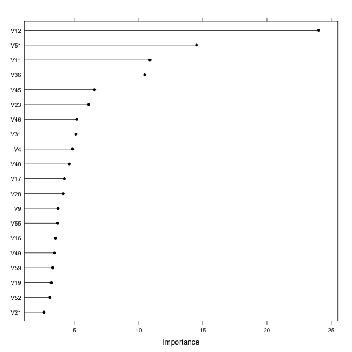

Variable importance evaluation functions can be separated into two groups: those that use the model information and those that do not. The advantage of using a model-based approach is that is more closely tied to the model performance and that it may be able to incorporate the correlation structure between the predictors into the importance calculation. Regardless of how the importance is calculated:
- For most classification models, each predictor will have a separate variable importance for each class (the exceptions are classification trees, bagged trees and boosted trees).
- All measures of importance are scaled to have a maximum value of 100, unless the
scaleargument ofvarImp.trainis set toFALSE.
Model Specific Metrics
The following methods for estimating the contribution of each variable to the model are available:
- Linear Models: the absolute value of the t-statistic for each model parameter is used.
- Random Forest: from the R package: "For each tree, the prediction accuracy on the out-of-bag portion of the data is recorded. Then the same is done after permuting each predictor variable. The difference between the two accuracies are then averaged over all trees, and normalized by the standard error. For regression, the MSE is computed on the out-of-bag data for each tree, and then the same computed after permuting a variable. The differences are averaged and normalized by the standard error. If the standard error is equal to 0 for a variable, the division is not done."
- Partial Least Squares: the variable importance measure here is based on weighted sums of the absolute regression coefficients. The weights are a function of the reduction of the sums of squares across the number of PLS components and are computed separately for each outcome. Therefore, the contribution of the coefficients are weighted proportionally to the reduction in the sums of squares.
-
Recursive Partitioning: The reduction in the loss function
(e.g. mean squared error) attributed to each variable at each split is
tabulated and the sum is returned. Also, since there may be candidate variables
that are important but are not used in a split, the top competing variables are
also tabulated at each split. This can be turned off using the
maxcompeteargument inrpart.control. This method does not currently provide class-specific measures of importance when the response is a factor. - Bagged Trees: The same methodology as a single tree is applied to all bootstrapped trees and the total importance is returned
-
Boosted Trees: This method uses the same approach as a single
tree, but sums the importances over each boosting iteration (see the
gbm package vignette). -
Multivariate Adaptive Regression Splines: MARS models
include a backwards elimination feature selection routine that
looks at reductions in the generalized cross-validation (GCV)
estimate of error. The
varImpfunction tracks the changes in model statistics, such as the GCV, for each predictor and accumulates the reduction in the statistic when each predictor's feature is added to the model. This total reduction is used as the variable importance measure. If a predictor was never used in any MARS basis function, it has an importance value of zero. There are three statistics that can be used to estimate variable importance in MARS models. UsingvarImp(object, value = "gcv")tracks the reduction in the generalized cross-validation statistic as terms are added. However, there are some cases when terms are retained in the model that result in an increase in GCV. Negative variable importance values for MARS are set to zero. Terms with non-zero importance that were not included in the final, pruned model are also listed as zero. Alternatively, usingvarImp(object, value = "rss")monitors the change in the residual sums of squares (RSS) as terms are added, which will never be negative. Also, the optionvarImp(object, value = "nsubsets")returns the number of times that each variable is involved in a subset (in the final, pruned model). Prior to June 2008,varImpused an internal function to estimate importance for MARS models. Currently, it is a wrapper around theevimpfunction in theearthpackage. -
Nearest shrunken centroids: The difference between the class
centroids and the overall centroid is used to measure the
variable influence (see
pamr.predict). The larger the difference between the class centroid and the overall center of the data, the larger the separation between the classes. The training set predictions must be supplied when an object of classpamrtrainedis given tovarImp. -
Cubist: The Cubist output contains variable usage statistics. It gives the percentage of times where each variable was used in a condition and/or a linear model. Note that this output will probably be inconsistent with the rules shown in the output from
summary.cubist. At each split of the tree, Cubist saves a linear model (after feature selection) that is allowed to have terms for each variable used in the current split or any split above it. Quinlan (1992) discusses a smoothing algorithm where each model prediction is a linear combination of the parent and child model along the tree. As such, the final prediction is a function of all the linear models from the initial node to the terminal node. The percentages shown in the Cubist output reflects all the models involved in prediction (as opposed to the terminal models shown in the output). The variable importance used here is a linear combination of the usage in the rule conditions and the model.
Model Independent Metrics
If there is no model-specific way to estimate importance (or the argument useModel = FALSE is used in varImp) the importance of each predictor is evaluated individually using a "filter" approach.
For classification, ROC curve analysis is conducted on each predictor. For two class problems, a series of cutoffs is applied to the predictor data to predict the class. The sensitivity and specificity are computed for each cutoff and the ROC curve is computed. The trapezoidal rule is used to compute the area under the ROC curve. This area is used as the measure of variable importance. For multi-class outcomes, the problem is decomposed into all pair-wise problems and the area under the curve is calculated for each class pair (i.e. class 1 vs. class 2, class 2 vs. class 3 etc.). For a specific class, the maximum area under the curve across the relevant pair-wise AUC's is used as the variable importance measure.
For regression, the relationship between each predictor and the outcome is evaluated. An argument, nonpara, is used to pick the model fitting technique. When nonpara = FALSE, a linear model is fit and the absolute value of the t-value for the slope of the predictor is used. Otherwise, a loess smoother is fit between the outcome and the predictor. The $R^2$ statistic is calculated for this model against the intercept only null model. This number is returned as a relative measure of variable importance.
An Example
On the model training web, several models were fit to the example data. The boosted tree model has a built-in variable importance score but neither the support vector machine or the regularized discriminant analysis model do.
gbm variable importance
only 20 most important variables shown (out of 60)
Overall
V12 24.014
V51 14.507
V11 10.868
V36 10.463
V45 6.554
V23 6.099
V46 5.167
V31 5.086
V4 4.842
V48 4.590
V17 4.202
V28 4.109
V9 3.708
V55 3.674
V16 3.515
V49 3.417
V59 3.289
V19 3.178
V52 3.075
V21 2.604
The function automatically scales the importance scores to be between 0 and 100. Using scale = FALSE avoids this normalization step.
To get the area under the ROC curve for each predictor, the filterVarImp function can be used. The area under the ROC curve is computed for each class.
M R
V1 0.6273646 0.6273646
V2 0.5765656 0.5765656
V3 0.5999674 0.5999674
V4 0.6614481 0.6614481
V5 0.6520711 0.6520711
V6 0.5923842 0.5923842
Alternatively, for models where no built-in importance score is implemented (or exists), the varImp can still be used to get scores. For SVM classification models, the default behavior is to compute the area under the ROC curve.
ROC curve variable importance
only 20 most important variables shown (out of 60)
Importance
V11 0.7766
V12 0.7564
V10 0.7272
V9 0.7252
V46 0.7088
V51 0.7047
V49 0.7012
V13 0.6984
V47 0.6972
V36 0.6885
V48 0.6822
V21 0.6742
V52 0.6694
V45 0.6671
V4 0.6614
V5 0.6521
V37 0.6508
V35 0.6494
V20 0.6411
V44 0.6360
For importance scores generated from varImp.train, a plot method can be used to visualize the results. In the plot below, the top option is used to make the image more readable.

(click image for larger pdf)